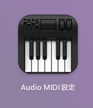
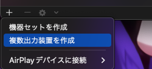
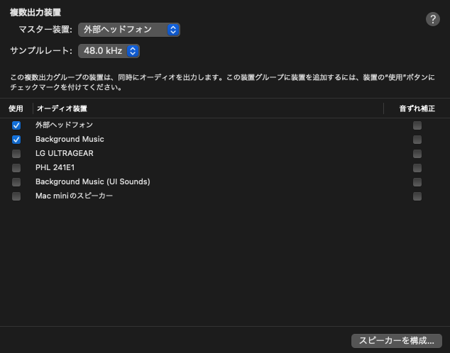
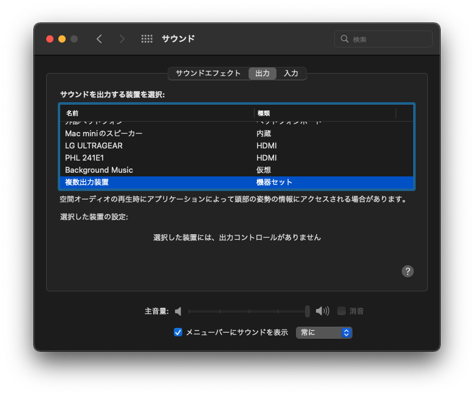
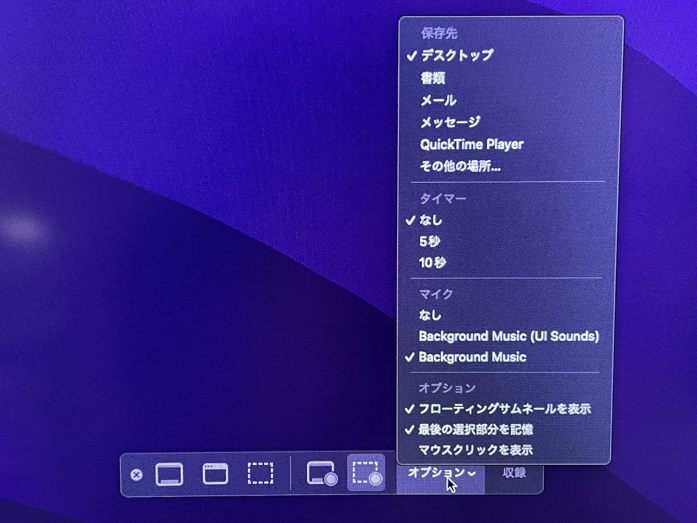

SE辞めた/Kotlin/Python/Hugo/Obsidian
好きなもの: OSS、クロスプラットフォーム
嫌いなもの: いかがでしたかブログ、ビッグテックの囲い込み
用のある方はmastodonまで連絡下さい

Macで画面を録画する際に、音も含めて行う方法についてのメモです
ググっても情報が古いものが出てきたりするのですが、今回はM1搭載Mac miniで動作確認済みです
Background Musicというものを使用します
ちなみにHomebrewから導入可能です
brew install --cask background-music
Homebrewアンチな方は普通にググってダウンロードしましょう(居るかわからないけど)
Macに元から入っている「Audio MIDI設定」を起動します

左下の+ボタンから「複数出力装置」を作成します

今回は、ヘッドホンを着用してのプレイを想定しているので、「外部ヘッドホン」と「Background Music」の2つにチェックを入れます

その後、システム環境設定の「サウンド」から、出力に先ほど作成した複数出力装置を指定します
なお指定後は音量操作が一時的に効かなくなります。音量は直前に設定していた大きさに固定されます
毎回システム環境設定を起動するのは面倒だと思うので、メニューバーに項目を表示するように設定しておくといいです

Shift + command + 5 を押すと準備画面になります
オプションからマイクをBackground Musicに設定します

あとはそのまま録画を開始すれば、音源も含めて収録されるはずです
うーん、MacからiPhoneを録画する際とかは普通に音源取れるんですけども、何故Macだけ標準で出来ないのでしょう・・・
以上閉店
SE辞めた/Kotlin/Python/Hugo/Obsidian
好きなもの: OSS、クロスプラットフォーム
嫌いなもの: いかがでしたかブログ、ビッグテックの囲い込み
用のある方はmastodonまで連絡下さい